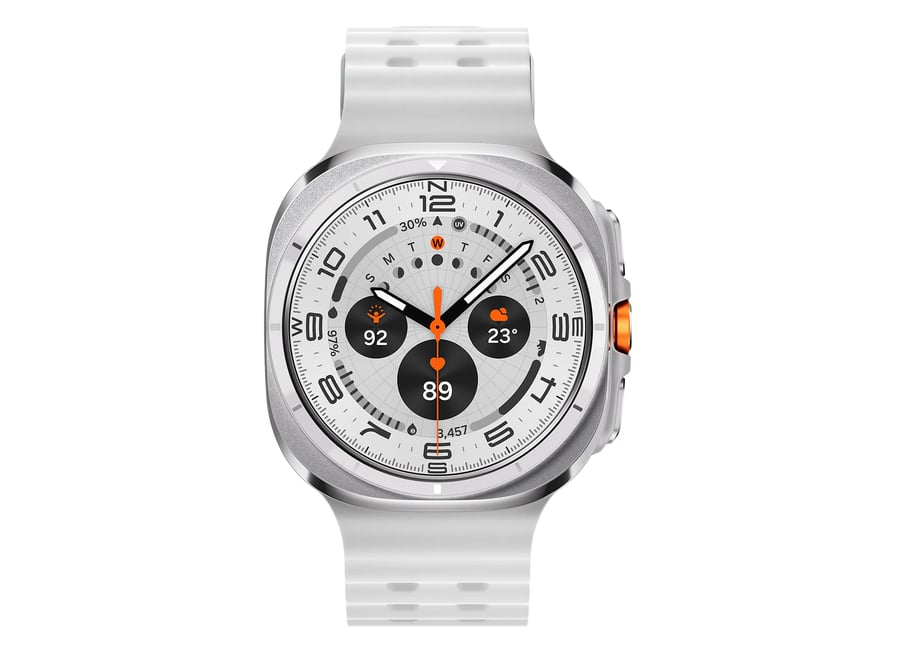

Samsung : Galaxy Watch Ultra
The Samsung Galaxy Watch Ultra redefines the smartwatch experience with a focus on durability, performance, and versatility. Designed for adventurers and professionals alike, the Galaxy Watch Ultra features a robust titanium case and sapphire crystal display, making it resistant to scratches, impacts, and extreme conditions.
